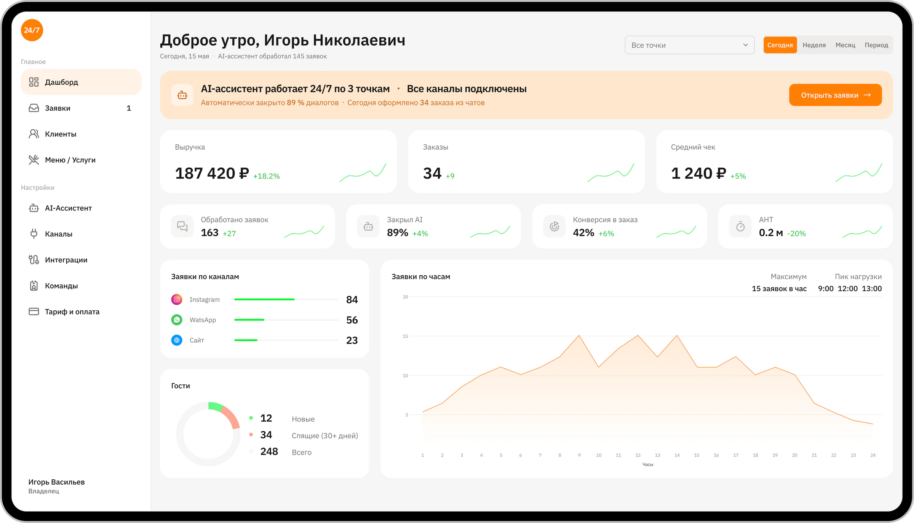
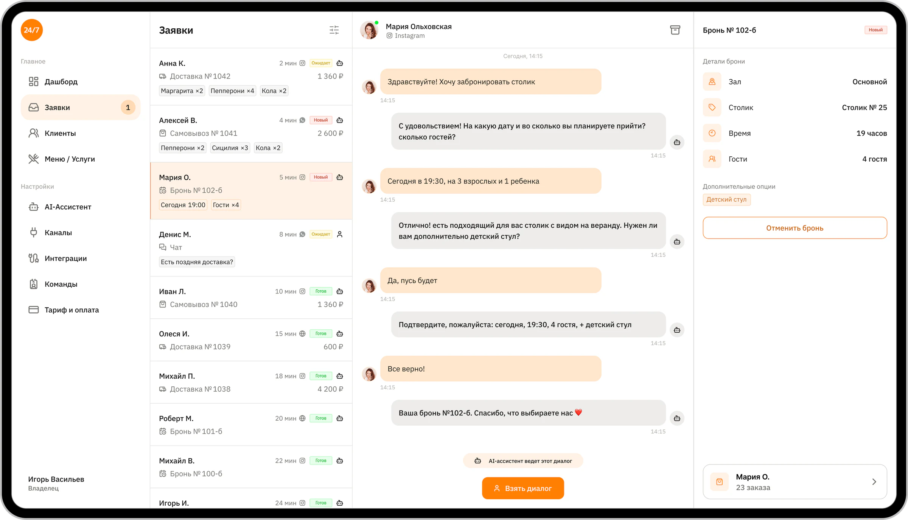
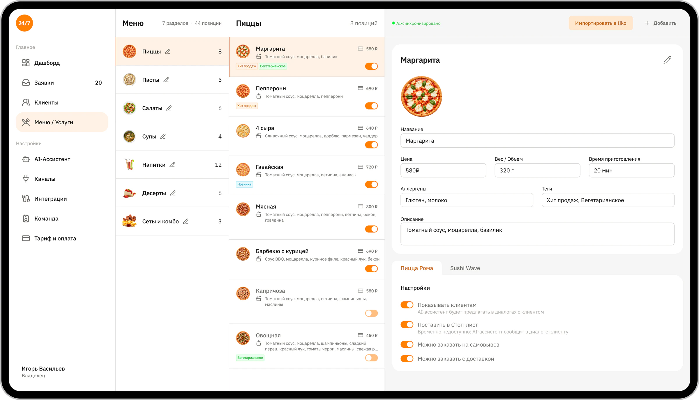
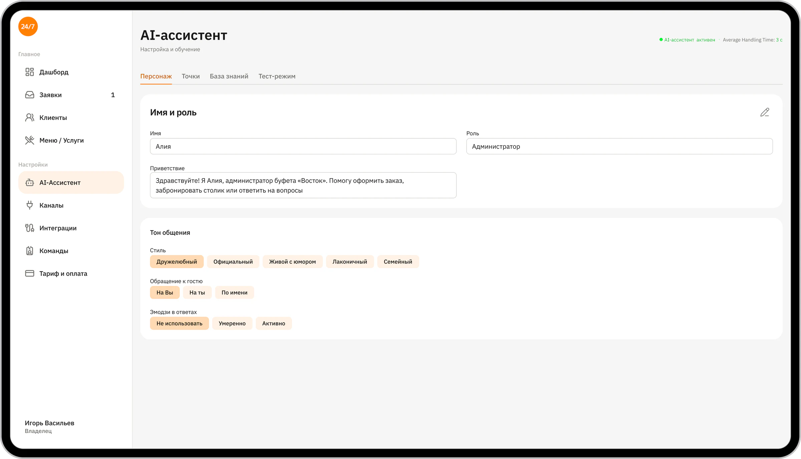
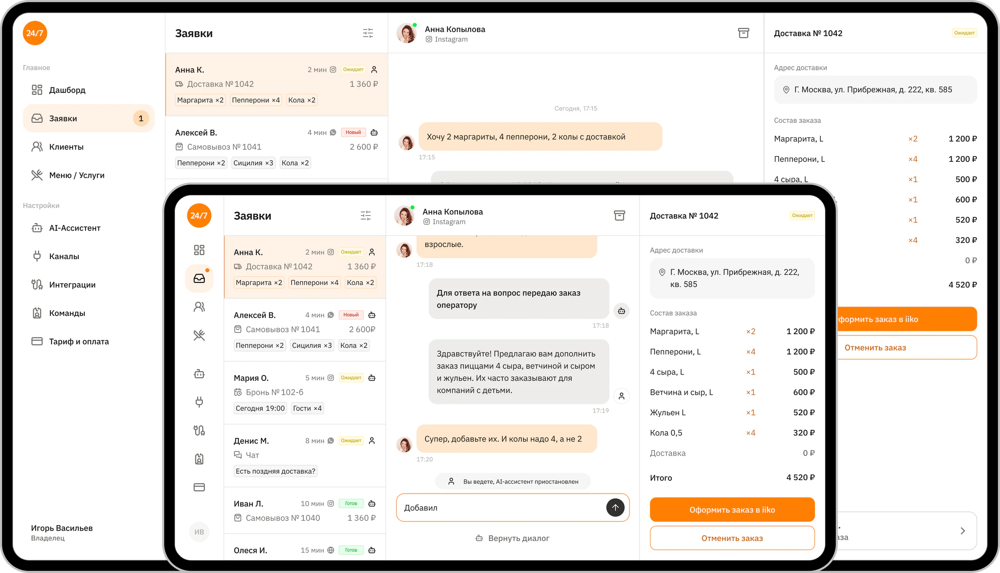

CRM для онлайн-заказов
Задача
Рестораны и кафе получают онлайн-заказы из разных источников, чтобы агрегировать все потоки, нужна CRM
У заказчика была идея, собственное исследование проблемы и прототип, собранный в Ловабл
Нужно было собрать это в единый продукт и передать в разработку
Решение
Спроектировать MVP CRM для обработки онлайн-заказов ресторанов
Результат
Комплексное решение для ресторанов: готовая CRM с AI-ассистентом 24/7 отвечает на вопросы, оформляет заказы для каждого гостя — в Instagram, WhatsApp и на сайте
Процесс
-
Исходные материалы
На старте проекта заказчик пришёл с уже сформированной идеей продукта, результатами собственного исследования, описанием ключевых требований и low-fidelity-прототипом. В нём были определены основные разделы CRM, однако не хватало целостной UI-системы, проработки состояний интерфейса и пользовательских сценариев
-
Ключевой экран
Работу начали с совместной проработки страницы заказа — ключевого экрана системы. На нём сформировали визуальную концепцию продукта, определили основные UI-паттерны и принципы оформления. После утверждения направления остальные экраны проектировались на основе выбранной дизайн-концепции
-
UI Kit
Параллельно с проектированием интерфейсов собирался UI Kit. Сначала была сформирована цветовая система и семантика цветов, затем на её основе последовательно создавались компоненты по атомарному подходу
-
Итерации
Из-за минимального объёма исходного ТЗ проект развивался итерационно. После каждого этапа заказчик просматривал готовые решения, уточнял требования и вносил корректировки
-
Интерфейсы CRM
Были спроектированы 10 основных экранов CRM со всеми необходимыми и пустыми состояниями, а также адаптации для ширины 1920 и 1280 px. Дополнительно разработаны модальные окна, выпадающие списки и элементы управления для фильтрации, выбора, редактирования и удаления данных
-
Лендинг и разработка
Финальным этапом стал дизайн промо-лендинга CRM в десктопной и мобильной версиях. После завершения дизайна проект передали в разработку. Сейчас он находится на этапе реализации с последующей поддержкой и уточнениями по запросам команды разработки




